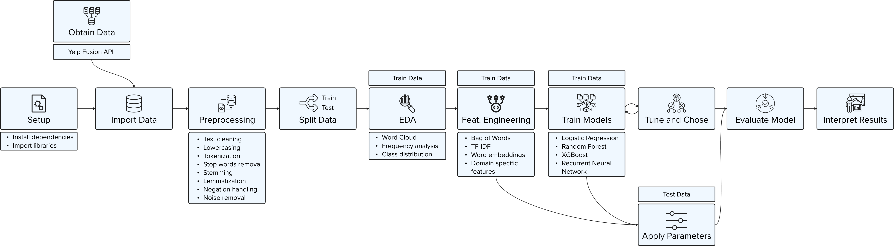

You have likely figured it out — this site is in the making. Please check back regularly to watch as I build it bit by bit.
Introduction
The project focuses on sentiment analysis of Yelp reviews to obtain insights from customer feedback. The analysis will be conducted using a dataset comprising
textual reviews, ratings, and relevant metadata from restaurants. The primary objective is to classify reviews based on their sentiment into positive,
negative, or neutral reviews.
The project includes data acquisition, preprocessing, cleaning of textual data, feature extraction, model building using machine learning or deep learning algorithms,
model evaluation, and interpretation of results. Techniques such as tokenization, stop-word removal, stemming, and vectorization will be used to prepare the data.
Various algorithms, including traditional classifiers like logistic regression and modern neural network-based approaches, will be explored to achieve optimal sentiment
classification performance.
Data | 
In this project, I am using customer review data provided by  through the Yelp Fusion API.
through the Yelp Fusion API.
Data Analysis
Near a great forest, there lived a poor woodcutter and his wife and his two children; the boy's name was Hansel, and the girl's name was Gretel. He had little to bite and to break, and once, when great scarcity fell on the land, he could no longer procure even daily bread. Now when he thought over this by night in his bed, and tossed about in his anxiety, he groaned and said to his wife: "What is to become of us? How are we to feed our poor children, when we no longer have anything even for ourselves?"
Results
"I'll tell you what, husband," answered the woman, "early tomorrow morning we will take the children out into the forest to where it is the thickest; there we will light a fire for them,
and give each of them one more piece of bread, and then we will go to our work and leave them alone. They will not find the way home again, and we shall be rid of them."
"No, wife," said the man, "I will not do that; how can I bear to leave my children alone in the forest?—the wild animals would soon come and tear them to pieces."
"Oh, you fool!" said she, "then we must all four die of hunger; you may as well plane the planks for our coffins," and she left him no peace until he consented.
"But I feel very sorry for the poor children, all the same," said the man.